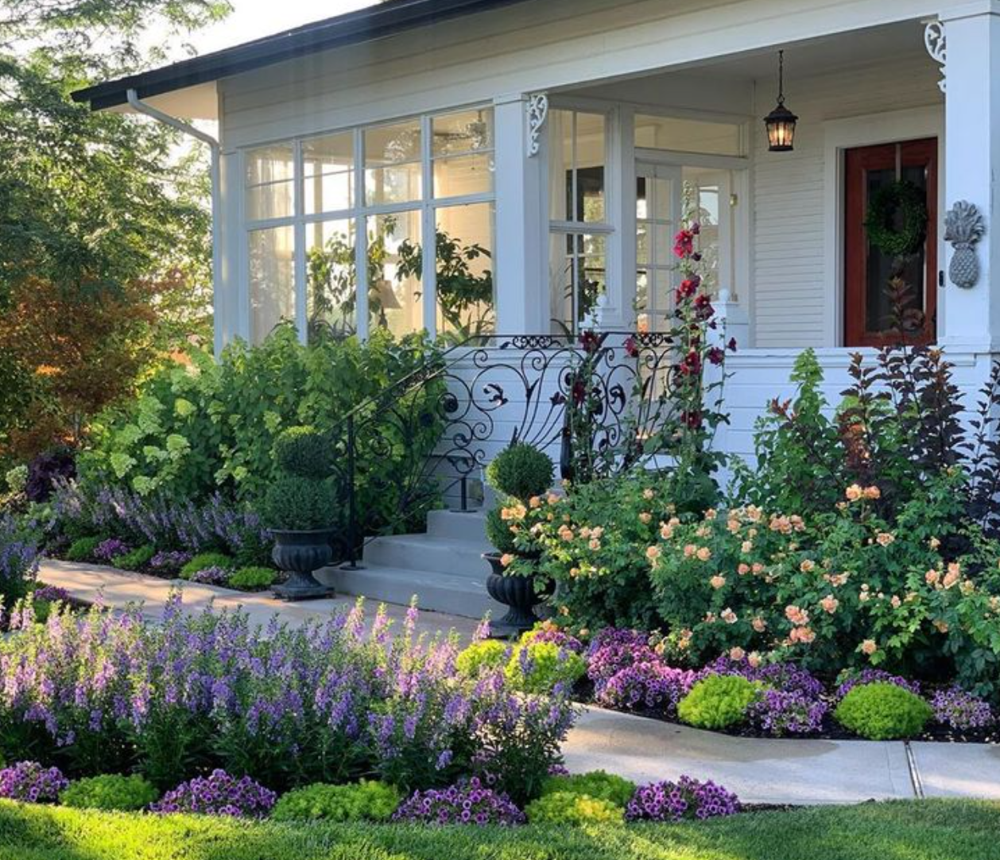
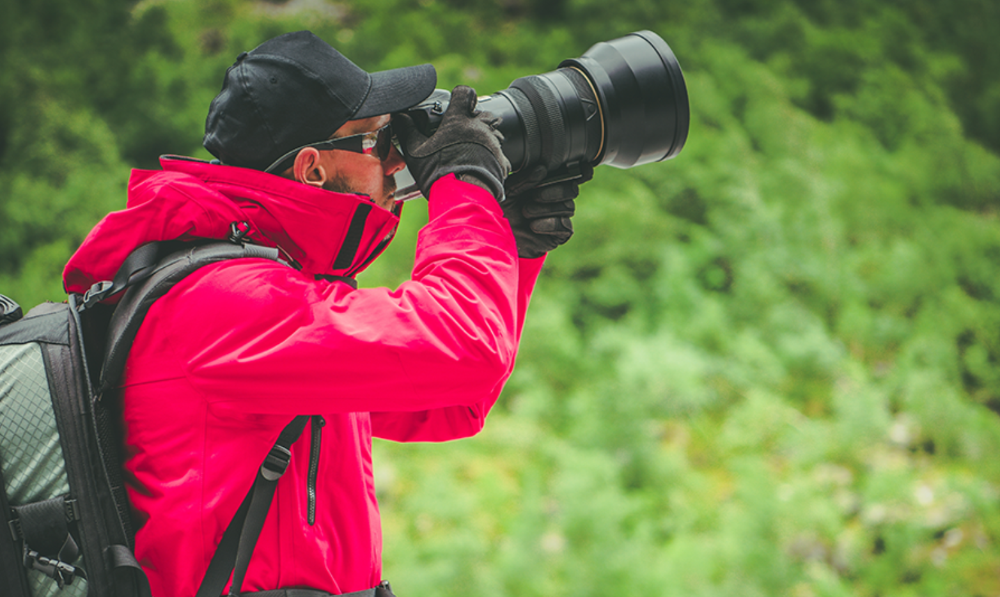
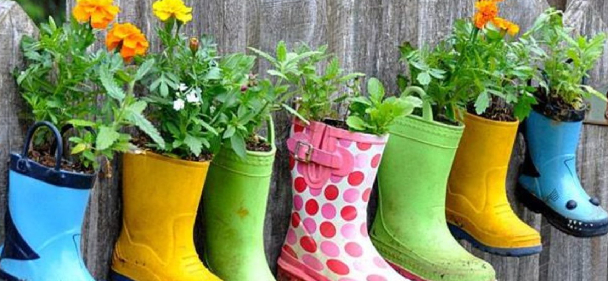
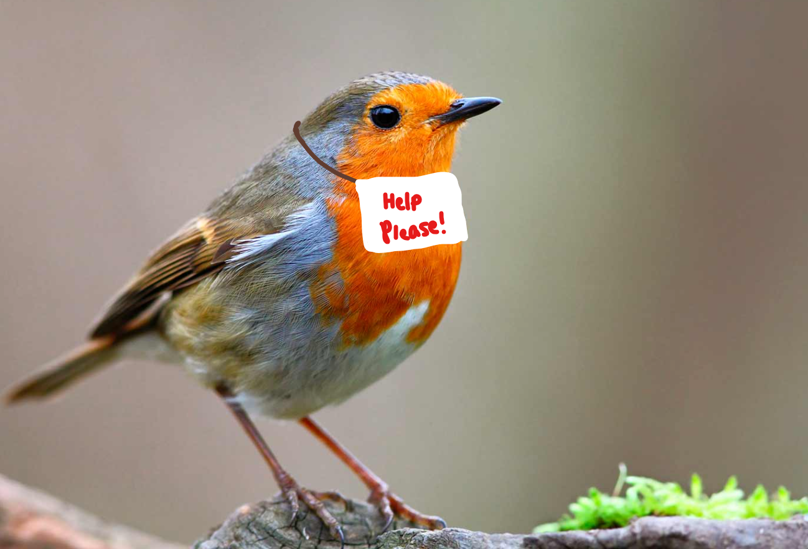

The Benefits of Bird-Feeding
Feeding birds has a wide variety of benefits. Keep reading to find out more about why you should make your own bird-feeder!
1. Keep Your Garden Healthy!

Birds play a huge role in the ecosystem of your garden.
Feeding birds attracts them to your garden, and they can help by pollinating the flowers there.
Birds also help manage the weeds and insects in an ecosystem, and attracting them to it will help maintain the ecosystem without using too many unnecessary pesticides - which is good for the environment and your wallet.
2. Photographic Opportunities

Setting up your own bird-feeder gives you plenty of great photographic opportunities. Birds around your area could be attracted by your bird-feeder, and this could include birds that you've never seen before.
3. Reduce, Reuse & Repurpose

Plastic isn’t biodegradable, and needs to either be recycled, reused or repurposed to ensure that it doesn’t pollute the environment. By repurposing an old plastic bottle that would otherwise be:
- Lying around (useless idea)
- Thrown in the recycling bin (ok idea - but why throw it away when you can use it?)
- Thrown in a trash can (bad idea)
- Tossed out onto the road (terrible idea)
Anyways, by reducing your use of plastic by repurposing and reusing an old plastic bottle to make a bird feeder instead of buying one made of brand new plastic (and possibly costs quite a bit), you get more advantages.
4. Help Birds!

Deforestation, which is the cutting down of trees in a way that you don't replace as fast as you cut them, causes habitat loss to birds, among other creatures.
In fact, here are a few statistics about deforestation:
- Between 1990 and 2016, the world lost an area of forest larger than South Africa.
- More than 43 million hectares of forest, which is an area larger than Germany, have been lost in just a little more than a decade in only a few of the deforestation hotspots.
- There is a loss of 13 million hectares of forest every year.
So you can imagine how much of an impact this has on birds. By giving them some food to eat, we can give them more time to recover and find a new home. This is a great way to do our bit for the planet.